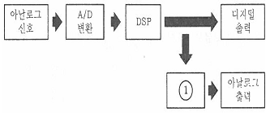
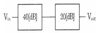
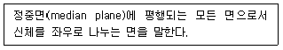
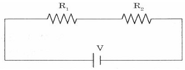
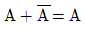
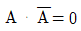
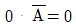
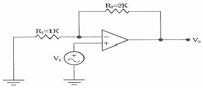

의료전자기능사 (2012-07-22 기출문제)
1과목: 임의 구분
1. 다음 중 생체신호와 측정전극이 옳지 않은 것은?
- 뇌전도는 표면전극으로 측정한다.
- 근전도는 표면전극으로 측정한다.
- 심음도는 표면전극으로 측정한다.
- 안구전도는 표면전극으로 측정한다.
(정답률: 63%)

2. 다음 중 생체신호 측정전극으로 사용되는 금속전극의 대표적인 재질은?
- 철(fe)
- 은-염화은(Ag-AgCI)
- 구리
- 금(Au)
(정답률: 84%)
3. 1분 동안에 좌심실이 대동맥으로 박출하는 혈액량을 무엇이라 하는가?
- 대동맥량
- 총혈액량
- 좌심실량
- 심박출량
(정답률: 72%)
4. 우리 몸의 말초신경계 중에서 민무늬근육, 심장근육 및 샘의 작용을 조절하는 신경계통은?
- 몸신경계(Somatic nerve system)
- 자율신경계(autonomic nerve system)
- 운동신경계(motor nerve system)
- 중추신경계(central nerve system)
(정답률: 62%)
5. 다음 중 인공생체재료의 특성으로 옳지 않은 것은?
- 내구성
- 화학적 활성
- 생체 적합성
- 안전성
(정답률: 78%)
6. 다음 중 아날로그 신호에 대한 설명으로 옳은 것은?
- “0”과 “1”로 구성된 이산적인 데이터
- 음성과 같은 이산적인 변이형태를 지닌 생체신호
- 전압과 시간에 의존하여 이산적으로 변화하는 물리량
- 전압과 전류가 시간에 의존하여 연속적으로 변화하는 물리량
(정답률: 69%)
7. 다음 디지털 신호처리시스템의 구성도에서 ①에 들어갈 신호처리 내용은?

- 신호처리
- 신호증폭
- 필터
- D/A 변환
(정답률: 81%)
8. 다음 중 소화기계(digestive system)에 속하지 않는 기관은?
- exophagus
- stomach
- urethra
- colon
(정답률: 56%)
9. 다음 생체의 압력계측 중 직접측정법에 해당되지 않는 것은?
- 혈압을 실시간으로 계측가능
- 혈관 내로 fluid-filled catheter 삽입
- 말단(팔) 부위에 압박주머니(cuff)를 부착한 후 압력 증가
- Catheter에 strain-gauge type의 압력센서를 연결하여 혈압파형 계측
(정답률: 68%)
10. 전압 이득이 각각 40[dB]와 20[dB]인 증폭기 2개를 다음 그림과 같이 연결하였다. 합성 전압이득은?

- 0[dB]
- 20[dB]
- 30[dB]
- 60[dB]
(정답률: 79%)
11. 다음 중 생체신호를 측정하는데 사용하는 표면 전극으로 사용하지 않는 전극은?
- 금속전극
- 내부전극
- 흡착전극
- 부유전극
(정답률: 68%)
12. 다음 해부학적 방향에 대한 용어 설명에 해당하는 방향은 무엇인가?

- 관상면(coronal plane)
- 시상면(sagittal plane)
- 이마면(frontal plane)
- 가로면(transverse plane)
(정답률: 65%)
13. 생체신호를 측정할 때 주의해야 할 사항이 아닌 것은?
- 정확한 계측 조작방법을 습득해야 한다.
- 생체신호를 측정할 때 잡음을 무시한다.
- 인체에 접촉되는 센서는 무독성을 사용한다.
- 측정 시 온도, 습도 등 계측에 적절한 환경을 유지한다.
(정답률: 79%)
14. 심전도의 파형에 나타나지 않는 파는?
- P파
- Q파
- R파
- W파
(정답률: 74%)
15. 다음 중 동맥에서 발생하는 맥파의 종류가 아닌 것은?
- 혈류맥파
- 직경맥파
- 압맥파
- 심음파
(정답률: 72%)
16. 다음 중 심장의 박동에 따른 혈액 이동 경로를 순서대로 나열한 것은?
- 신체 각 기관 → 대정맥 → 우심방 → 우심실 → 허파동맥 → 허파 → 허파정맥 → 좌심방 → 좌심실 → 대동맥
- 신체 각 기관 → 대정맥 → 우심실 → 우심방 → 허파동맥 → 허파 → 허파정맥 → 좌심실 → 좌심방 → 대동맥
- 신체 각 기관 → 대정맥 → 좌심방 → 좌심실 → 허파동맥 → 허파 → 허파정맥 → 우심방 → 우심실 → 대동맥
- 신체 각 기관 → 대정맥 → 좌심실 → 좌심방 → 허파동맥 → 허파 → 허파정맥 → 우심실 → 우심방 → 대동맥
(정답률: 75%)
17. 뇌 신경세포의 전기적 활동에 의해 발생하는 전기적 신호를 측정 기록한 것을 무엇이라 하는가?
- 안전도(EOG)
- 심전도(ECG)
- 뇌전도(EEG)
- 근전도(EMG)
(정답률: 85%)
18. 다음 중 가슴부위의 골격에 해당하지 않는 것은?
- 빗장뼈, 어깨뼈
- 갈비뼈, 칼돌기
- 갈비뼈, 척추
- 마루뼈, 관자뼈
(정답률: 65%)
19. 다음 중 호흡기기의 기능평가를 위한 생체변수인 것은?
- 혈압
- 맥박수
- 생체전위
- 폐용적
(정답률: 68%)
20. 다음 인체의 감각 기관 중에서 눈에 나타나는 증상 용어를 설명한 것으로 옳지 않은 것은?
- 근시 : 상이 망막 앞에 맺어지는 현상으로 오목렌즈로 교정한다.
- 원시 :상이 망막 뒤에 맺어지는 현상으로 볼록렌즈로 교정하며 노안이라고도 한다.
- 난시 : 각막이나 수정체의 굴절면이 고르지 않아 망막에 정확히 상이 맺혀지지 않는 현상
- 약시 : 두 눈으로 본 단일 물체가 두 개로 보이는 것으로 안근마비 때에 나타나는 현상
(정답률: 69%)
2과목: 임의 구분
21. 다음 회로에서 R1=10[Ω], R2=30[Ω], V=10{V]일 때 r1에 흐르는 전류는?

- 0.25[A}
- 1.0[A}
- 1.3[A}
- 2.0[A}
(정답률: 62%)
22. 물체에 힘을 가해 이동할 때 공급하는 에너지를 무엇이라고 하는가?
- 일(work)
- 속도(velocity)
- 토크(torque)
- 속력(speed)
(정답률: 70%)
23. 다음 논리식 중 성립되지 않는 것은?

- A∙A = 0


(정답률: 31%)
24. 다음 중 심음을 측정하는 변환기는?
- 전자유량계
- 차압식 유랑계
- 서미스터
- 마이크로폰
(정답률: 60%)
25. P형과 N형 반도체의 접합으로 만들어진 소자의 주된 역할은?
- 증폭작용
- 발진작용
- 정류작용
- 스위치작용
(정답률: 57%)
26. 다음 나사의 종류 중 한쪽 방향으로 강하고 센 힘을 전달하는 나사는?
- 둥근나사
- 사각나사
- 톱니나사
- 사다리꼴나사
(정답률: 64%)
27. 전하가 가지고 이TSms 전기의 양을 무엇이라 하는가?
- 전위량
- 전류량
- 전압량
- 전하량
(정답률: 72%)
28. 다음 중 전기와 관련된 용어와 단위의 연결이 옳지 않은 것은?
- 전하-[C]
- 전류-[A]
- 전압-[V]
- 저항-[W}
(정답률: 69%)
29. 기계의 구성 요소 중에서 조립하려면 결합(체결)요소가 사용된다. 다음 중 결합요소인 것은?
- 베벨 기어
- 피니언
- 3각나사
- 베어링
(정답률: 53%)
30. A, B 두 개의 입력 중 어느 하나라도 “1”일 경우에 출력이 “1”이 되는 논리 게이트는?
- AND
- OR
- NAND
- NOR
(정답률: 72%)
31. 일반적인 디지털 멀티미터(Digital multimeter)로 측정할 수 없는 것은?
- 저항의 크기
- 직류전압
- 파형
- 교류전압
(정답률: 38%)
32. 다음 중 오실로스코프로 측정이 불가능한 것은?
- 전압
- 위상
- 주파수
- 저항값
(정답률: 52%)
33. 다음 중 체온의 측정에 사용하는 서미스터의 특성에 대한 설명 중 옳은 것은?
- 온도의 변화에 따라 기전력이 발생한다.
- 온도의 변화에 따라 저항이 변화한다.
- 온도에 비례하는 빛을 방출한다.
- 온도에 비례하는 전류를 발생한다.
(정답률: 48%)
34. 전압계의 허용오차에서 0.5급의 경우는 허용 오차율을 몇 [%]로 나타내는가?
- ± 0.5
- ± 1.0
- ± 1.2
- ± 1.5
(정답률: 60%)
35. 다음 연산증폭기에서 전압이득(Av)은?

- 2
- 3
- 4
- 5
(정답률: 50%)
36. 다음 중 단위에 사용하는 배수의 연결이 옳지 않은 것은?
- T(테라) : 109
- k(킬로) : 103
- m(밀리) : 10-3
- n(나노) : 10-9
(정답률: 65%)
37. 다음 중 2개의 입력이 서로 다를 때만 출력이 “1”이 되는 게이트는?
- AND
- OR
- NOT
- EX-OR
(정답률: 63%)
38. 어떤 도체의 단면을 30분 동안에 5400[C}의 전기량이 이동했다고 하면 전류의 크기는 얼마인가?
- 1[A]
- 3[A]
- 5[A]
- 7[A]
(정답률: 58%)
39. 전력 다이오드는 교류입력 신호를 평균값 또는 직류값으로 변화시키는 정류과정에서 사용되는 소자이다. 이런 용도로 사용되는 다이오드의 명칭으로 가장 적절한 것은?
- 정류 다이오드
- 반도체 다이오드
- 실리콘 다이오드
- 게르마늄 다이오드
(정답률: 64%)
40. 다음 중 정류형 계기는 어느 값을 지시하는가?
- 평균값
- 실효값
- 파형률
- 파고율
(정답률: 55%)
3과목: 임의 구분
41. 정부 또는 정부가 위임∙위탁한 기관에서 당해품목이 적합하게 제조∙판매되고 있음을 증명하는 서류를 무엇이라고 하는가?
- 의료기기 품질경영시스템 인증서
- 의료기기 품목허가서
- 제조판매증명서
- 기술문서
(정답률: 52%)
42. MRI 영상장치에서 수소원자핵의 종축 자기화에서 횡축 자기화로 변화시키는 역할을 하는 것은?
- 90〬 RF 펄스
- gradient 코일
- 초전도자석
- shim 코일
(정답률: 57%)
43. 마취기 시스템의 구성요소가 아닌 것은?
- 증발기
- 통풍기
- 청소기 시스템
- 응축기
(정답률: 57%)
44. 다음 중 진단용 방사선 발생장치가 아닌 것은?
- 유방촬영용 장치
- 진단용 초음파 장치
- 진단용 엑스선 발생기
- 치과진단용 엑스선 발생장치
(정답률: 61%)
45. 다음 중 전류의 세기에 따른 인체의 생리적 반응으로 옳지 않은 것은?
- 1[mA]-이탈할 수 없는 전류
- 50[mA] 이상-근육수축, 호흡마비, 심장억제, 통증
- 100~300[mA]-심실세동
- 6[A] 이상-호흡정지, 3도 화상
(정답률: 44%)
46. 전기수술기에 대한 설명으로 옳지 않은 것은?
- 전기에너지를 사용하여 수술 시 출혈량을 줄여서 혈액의 손실을 줄이는 장비이다.
- 수술 시 시야를 확보할 수 있고 흉터도 심하게 남지 않는다.
- 저주파의 전류를 통과하면 고통도 없고 근육수축도 일어나지 않는다.
- 전기수술기의 작용은 절개, 응고, 지혈 등 크게 세 가지이다.
(정답률: 52%)
47. 수행 목적에 따른 재활보조공학 기구의 종류로 옳지 않은 것은?
- 듣기 재활보조공학기구-보청기
- 이동 재활보조공학기구-확대기구
- 의사전달 재활보조공학기구-인공후두
- 단말기 입력 재활보조공학기구-마우tm 스틱
(정답률: 66%)
48. 다음 중 심박출량 측정법으로 옳지 않은 것은?
- 픽(Fick)법
- X-선 희석법
- 온도(열)희석법
- 색소(염료)희석법
(정답률: 50%)
49. 다음 중 진료에 관한 기록 보존 연한으로 옳은 것은?
- 환자 명부 : 5년
- 진료기록부 : 5년
- 처방전 :5년
- 수술기록 : 5년
(정답률: 52%)
50. 의료기기의 제품에 사용되는 재료를 선택함에 이TDj서 재료의 성질과 기능이 사용 목적에 적당한가를 먼저 생각해야 한다. 다음 중 의료기기의 생물학적 평가와 연관하여 고려되어야 하는 사항이 아닌 것은?
- 제조재료
- 제품의 분해산물
- 원제품의 성능과 성질
- 제품의 사용 목적의 변화
(정답률: 40%)
51. 전기저항이나 생체조직률의 온도특성을 이용하는 소자가 아닌 것은?
- 압전 센서
- 서미스터
- 적외선 센서
- 열전대소자
(정답률: 60%)
52. 체내의 전해엑에 의해 생성된 혈액의 산염기평형 측정을 위한 임상검사용 기기는?
- 원심분리기
- 생화학분석기
- pH meter
- 자동혈구계수기
(정답률: 63%)
53. 다음 중 의료기기의 생물학적 재평가가 요구되는 내용으로 옳지 않은 것은?
- 제품의 사용횟수의 변화
- 저장 중인 완제품의 변화
- 제품의 사용 목적의 변화
- 제품 원자재의 출처나 사양의 변화
(정답률: 54%)
54. 기억된 내용에 접근(access)하여 읽을(read)수는 있으나 임의로 기억시킬 수(write)없는 읽기 전용 기억소자로서 전원이 꺼져도 기억 내용이 사라지지 않는 것은?
- 버스(BUS)
- 롬(ROM)
- 램(RAM)
- 코어(CORE)
(정답률: 63%)
55. 다음 중 인공심폐기에 대한 설명으로 옳지 않은 것은?
- heart lung Machine으로 불린다.
- 심장과 폐의 역할을 하는 의료기기이다.
- 혈액에 산소를 공급하지만 이산화탄소는 제거하지 않는다.
- 우심방에서 나온 혈액을 산화기를 거쳐 대동맥으로 다시 보낸다.
(정답률: 72%)
56. 다음 중 의료기관을 개설할 수 없는 사람은?
- 임상병리사
- 조산사
- 치과의사
- 한의사
(정답률: 70%)
57. 적절한 시험동물모델 또는 시스템을 사용했을 때, 혈액과 접촉하는 의료기기 및 의료용재료에 의한 혈액 또는 혈액구성요소들의 영향을 평가하는 시험은?
- 혈액적합성시험
- 발열성시험
- 피내반응시험
- 아급성독성시험
(정답률: 60%)
58. 환자감시장치의 혈중중산소포화도(SpO2) 측정에 관한 설명으로 합당하지 않은 것은?
- 산소와 결합한 헤모글로빈은 적외선을 많이 흡수하는 성질을 이용한 것이다.
- 광원은 적외선과 파장이 긴 가시광선인 빨간색을 혼합하여 사용한다.
- 환자의 상태와 무관하게 측정하여 적산하는 시간이 동일하다.
- 발광부와 수광부로 구분되어 손가락 끝부분이 손톱 부위에 부착한다.
(정답률: 65%)
59. 전기자극치료란 인체에 전류를 통하게 하여 유용한 생리적 반응을 유발하고 이로 인해 질병을 치료하는 모든 방법을 가리킨다. 의료용으로 주로 쓰이는 전기의 형태가 아닌 것은?
- 평류전기
- 감응전기
- 고압전기
- 교류전기
(정답률: 61%)
60. 사용자로부터 데이터를 입력받기위해서는 표준 입력 함수를 사용한다. C언어에서 제공하는 표준 입력 함수 중의 하나는?
- printf() 함수
- main()함수
- scanf() 함수
- swap()함수
(정답률: 47%)
심음도는 표면전극으로 측정하는 이유는 심장의 전기적인 활동이 심장 표면에서 발생하기 때문입니다. 따라서 표면전극을 사용하여 심음도를 측정합니다.
뇌전도와 근전도도 마찬가지로 뇌와 근육의 전기적인 활동이 표면에서 측정 가능하기 때문에 표면전극을 사용합니다.